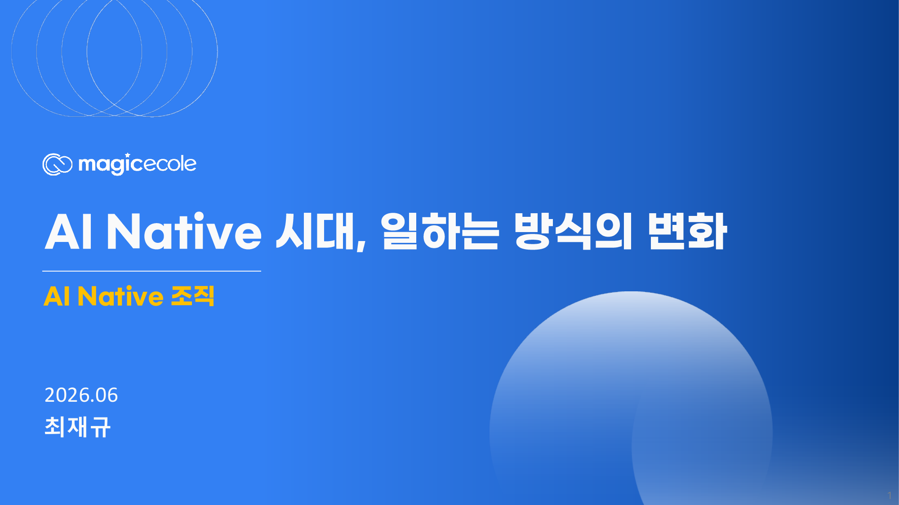

업무 지시서
AI에게 시킬 일을 목적, 입력 자료, 산출물, 검토 기준으로 구조화합니다.
핵심 메시지
이번 수업의 목표는 AI 도구 사용법을 더 많이 아는 것이 아니라, 신세계 I&C가 현업의 업무 문제를 좁고 깊게 정의하고 조직 안에 남는 AX 산출물로 전환하는 감각을 만드는 것입니다.
AI에게 시킬 일을 목적, 입력 자료, 산출물, 검토 기준으로 구조화합니다.
자료, 용어, 정책, 예시, 금지 사항을 반복 가능한 Context Pack으로 묶습니다.
개인 사용을 권한, 로그, 품질 평가, 승인 지점이 있는 업무 루프로 연결합니다.
AI 초안과 사람의 수정 결과를 비교해 다음 실행 기준을 개선합니다.
오후 수업 흐름
생성형 AI, 멀티모달, Agent AI, Physical AI를 조직 운영 변수로 읽습니다.
MAX Studio, MAX Tutor, MAX Cast 사례를 통해 교육, 상담, 콘텐츠, 운영 자동화 구조를 봅니다.
문제 찾기, 빠른 구현, 검증 체계, PoC, PM 전환으로 이어지는 AX 전환 절차를 정리합니다.
내부 전문가 양성, 좁고 명확한 과제 정의, 사람 검토와 보안 원칙을 실행 기준으로 만듭니다.

6/26 강의자료
강의자료는 AI 기술의 속도와 방향, AI Native와 AI Harness 적용 사례, 업무 도입 방식, 프롬프트/컨텍스트/하네스 엔지니어링, AX 도입 방안, 도입 조건과 리스크 관리로 구성되어 있습니다.
강의자료 다운로드복습 지도
지식 비용, 멀티모달, Agent AI 흐름을 업무 설계의 전제로 둡니다.
개인 생산성보다 업무 루프, 품질 기준, 책임 구조가 있는지 봅니다.
반복 빈도, 자료 준비도, 시스템 연결성, 보안 리스크로 후보를 좁힙니다.
요청서, 작업 책상, 운영 장치, 개선 리듬을 분리해 설계합니다.
교육, 업무 발굴, 도메인 전문가 양성, 90일 PoC, 추진안으로 이어갑니다.
데이터, 권한, 품질, 책임, 감사 기준을 PoC 설계 초기에 고정합니다.
서울대학교 EPM 연결점
공개 강의 문안은 기술 교육처럼 보이더라도, 현장에서 남겨야 할 결과는 AI4PM 실행 과제 후보입니다. 신세계 I&C의 역할은 그룹과 고객사의 현업 문제를 기술 언어로 번역하고, 내부 전문가가 검증 가능한 PoC 범위로 좁히는 것입니다.
신세계 I&C 적용 렌즈
현장 실습
반복 빈도, 처리 시간, 오류 비용, 고객/현업 영향도를 기준으로 후보 업무를 고릅니다.
업무 요청서와 자료 책상을 분리해 AI가 같은 기준으로 반복 실행할 수 있게 만듭니다.
개인 실험을 조직 업무로 쓰기 위해 로그, 권한, 평가 기준, 승인자를 정합니다.
ROI와 실행 난이도를 함께 보고, 작게 만들 수 있는 후보 1-3개로 줄입니다.
90일 실행 프로그램
AI 리터러시, AI Native, Harness, 보안 원칙을 같은 언어로 맞춥니다.
업무 후보를 모으고 ROI와 실행 난이도로 PoC 후보 3개를 우선순위화합니다.
Context Pack, 업무 루프, 품질 평가표, 사람 승인 기준을 만듭니다.
시제품, 테스트 케이스, KPI 리포트, 본 프로젝트 전환안을 남깁니다.
Guardrails
Materials